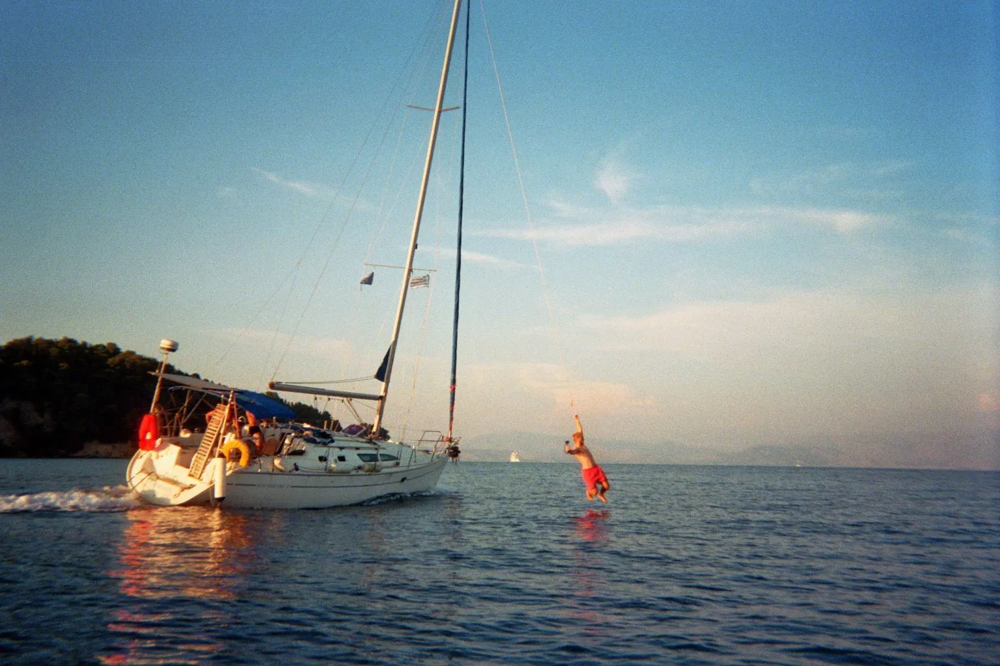
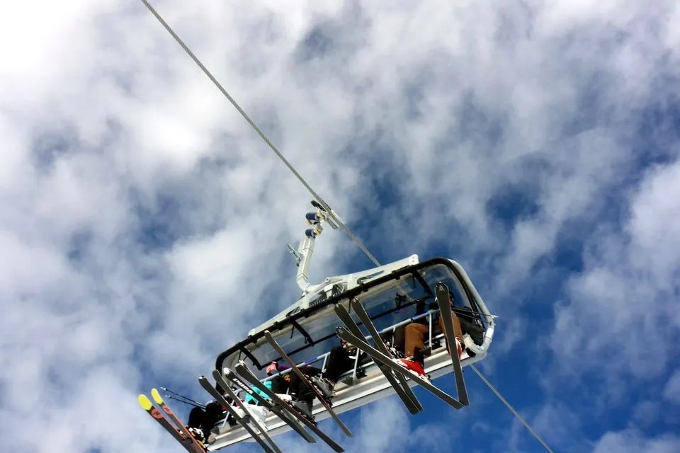

Projects
What we have built so far.
Every project starts with the brand behind it and only ends when the last reel is online. It started with the Berlin Night Run, then we went out on the boat for Dagen Yachtcharter.

01 · Berlin · 2026
Night Run
A run through Berlin at night with a DJ, food and drinks, an afterparty and partners like Red Bull and HEJ Natural. Our first own event – from idea to execution in a few weeks.
View project
02 · Corfu · 2026
Dagen Yachtcharter
One week on board, 10 reels, daily stories and over 270,000 views. Sailing, told for a younger audience.
View project
Concept image03 · In planning · Tyrol · March 2027
SNOWSIDE
Our creator ski week: one week in Tyrol with selected creators, a chalet and plenty of adventure. We are looking for partners and creators.
View project04 · Your project
The next project could be yours.
Tell us what you have in mind.
Start a project